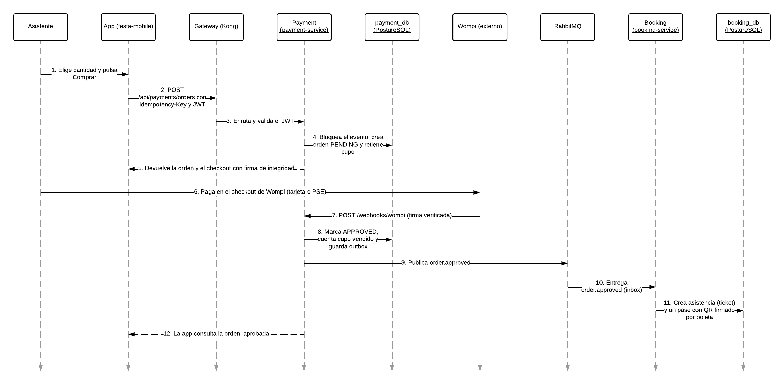
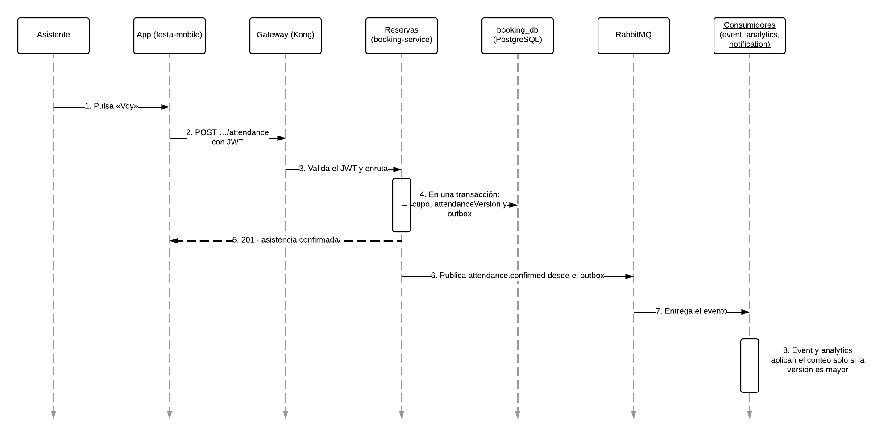
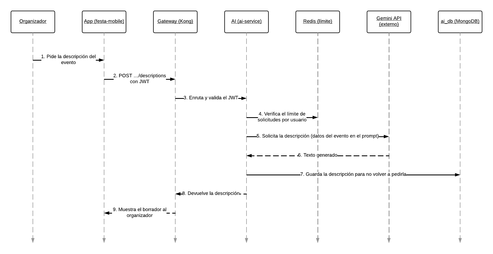

Arquitectura
Festa es un conjunto de microservicios detrás de un gateway Kong. Cada servicio tiene su propia base de datos. La app habla solo con el gateway por HTTPS. Los servicios se comunican de dos formas: con llamadas REST que esperan respuesta, y con eventos en RabbitMQ que no la esperan. Los eventos tienen contratos versionados.
Contexto del sistema

Las personas usan Festa para descubrir planes, comprar boletas y gestionar eventos. Festa usa Mapbox para el mapa, Gemini para la IA, Wompi para los cobros, Google Identity para el acceso y Firebase Cloud Messaging para las notificaciones push.
Despliegue en AWS

Cada servicio corre como tarea en ECS Fargate y tiene su base de datos. El gateway recibe las peticiones por HTTPS y las reenvía al servicio que corresponde.
Flujos principales
Compra de una boleta

Festa nunca recibe datos de tarjeta. Devuelve un checkout firmado y la persona paga en Wompi. El webhook confirma el pago, payment-service publica order.approved y booking-service crea el pase.
Confirmar asistencia

La confirmación descuenta el cupo y sube la versión de asistencia del evento en la misma operación. Los consumidores solo aplican una versión mayor a la guardada.
Crear evento

Event-service guarda el evento y su fila de outbox en una misma transacción. Un publicador envía después el evento event.published a RabbitMQ.
Descripción con IA

El servicio de IA le pide a Gemini la descripción solo con los datos del evento. Lo guarda y lo devuelve. Si el modelo falla, la app recibe un error controlado.
Validar el QR en la entrada

El QR va firmado con HMAC. Booking-service verifica la firma, que el evento coincida y que el pase no se haya usado ni revocado. Lo marca como usado en la primera validación.
Servicios, contratos y decisiones
- Servicios: endpoints, tablas, eventos y estados de cada microservicio.
- Contratos: formato de los mensajes entre servicios y cómo evolucionan.
- Decisiones de arquitectura: por qué se eligió AWS y Gemini, y qué se descartó.